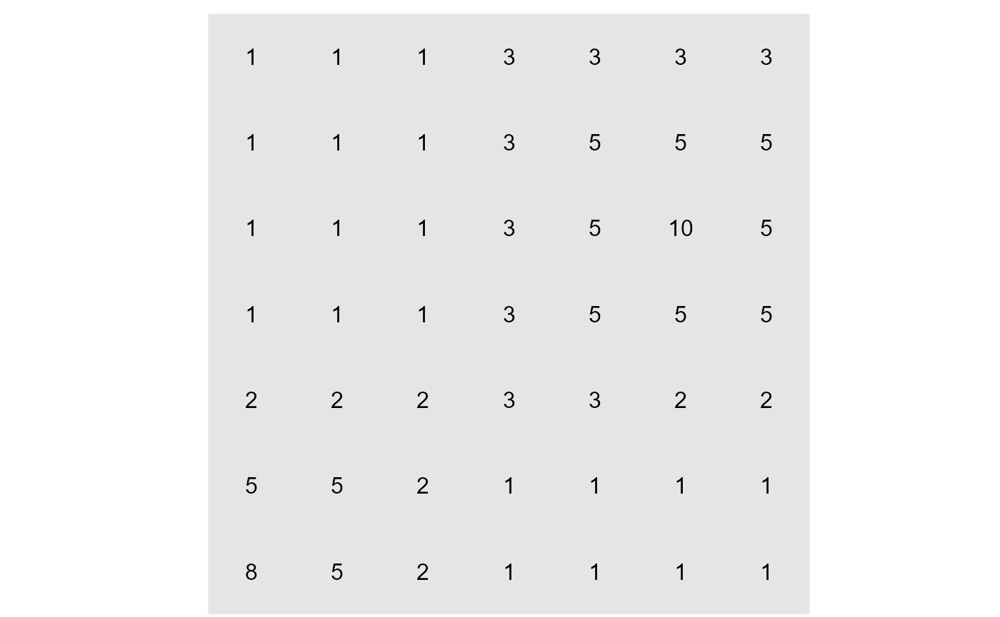
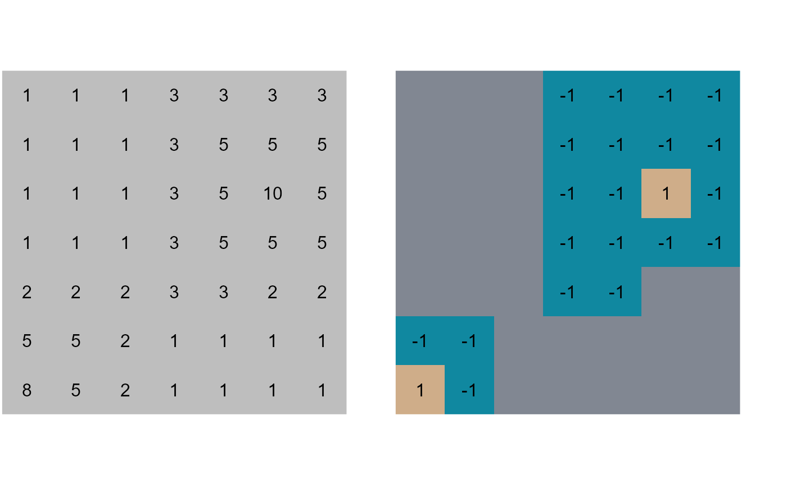
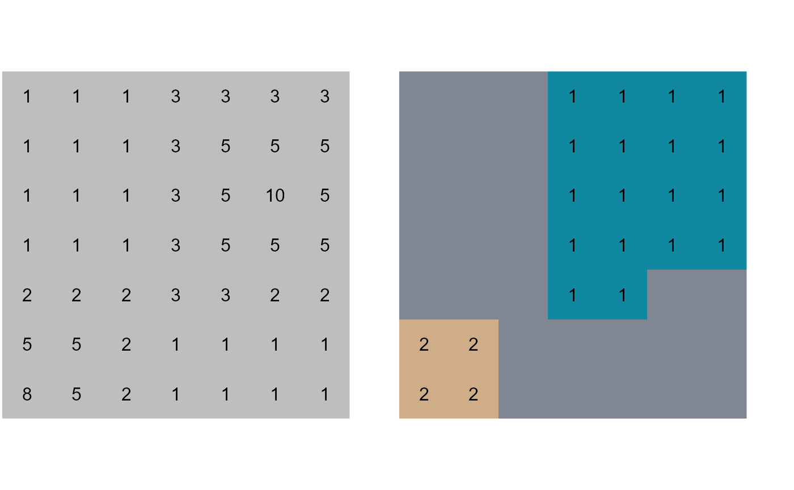

vignettes/articles/scapesClassification_01_5_FunctionAnchorSeed.Rmd
scapesClassification_01_5_FunctionAnchorSeed.RmdThe function anchor.seed() can be both used to (i) identify anchor cells at local maxima or minima or (ii) to identify raster objects. In the next sections we will illustrate how it can be used.
We will use a dummy raster to illustrate the function anchor.seed() (Figure 1). We can start by computing its attribute table, in which it is named "dummy_var", and its list of neighborhoods.
# LOAD LIBRARIES
library(scapesClassification)
library(raster)
# LOAD THE DUMMY RASTER
r <- list.files(system.file("extdata", package = "scapesClassification"),
pattern = "dummy_raster\\.tif", full.names = T)
r <- raster(r)
# COMPUTE THE ATTRIBUTE TABLE
at <- attTbl(r, "dummy_var")
head(at, 3)
## Cell dummy_var
## 1 1 1
## 2 2 1
## 3 3 1
# COMPUTE THE LIST OF NEIGBORHOODS
nbs <- ngbList(r)
head(nbs, 3)
## $`1`
## [1] 2 8 9
##
## $`2`
## [1] 1 3 8 9 10
##
## $`3`
## [1] 2 4 9 10 11
scapesClassification functions.
The function anchor.seed() take as inputs four sets of conditions:
cond.filter, the conditions to define what cells have to be evaluated by the function.
cond.seed, the conditions to identify, at each iteration, the seed cell. The seed cell is the cell around which growth and isolation conditions are applied.
cond.growth, the conditions to define a buffer around the seed cell.
cond.isol, the conditions to isolate one seed cell (and its buffer) from another.
The first set of condition to be evaluated is the cond.filter. The evaluation of the remaining sets of conditions is iterative. At each iteration the following process is repeated:
A seed cell is identified and receives a classification number (as specified by the argument class)
Cells contiguous and continuous with the seed cell meeting the conditions specified by cond.growth are assigned to the same class of the seed cell.
Cells contiguous and continuous with cells belonging to the seed class meeting the conditions specified by cond.isol are assigned to an isolation buffer (class = -1). Cells included in the isolation buffer are ignored in all following iterations.
As an example we will identify the two local maxima existin on the dummy raster can find local using the following set of conditions Figure 2:
cond.filter = "dummy_var > 2"
cond.sed = "dummy_var == max(dummy_var)"
cond.growth = NULL
cond.isol = dummy_var < dummy_var[]
# ATTRIBUTE TABLE VARIABLES
names(at)
## [1] "Cell" "dummy_var"
# COMPUTE THE CLASS VECTOR
cv <- anchor.seed(at,
nbs,
class = 1,
cond.filter = "dummy_var > 2",
cond.seed = "dummy_var == max(dummy_var)",
cond.isol = "dummy_var < dummy_var[]",
lag.isol = 1,
isolationClass = TRUE,
silent = TRUE)
# CONVERT THE CLASS VECTOR INTO A RASTER
r_cv <- cv.2.rast(r, at$Cell, classVector = cv)
# CLASS VECTOR LEVELS
unique(cv)
## [1] NA -1 1
# class = 1, peaks
# class = -1, isolation class
# class = NA, unclassified cells
# PLOT THE CLASS VECTOR
par(mar = c(0.1, 0.1, 0.1, 0.1), par(mfrow=c(1,2)))
plot(r, axes=FALSE, box=FALSE, legend = FALSE, col=c("grey"))
text(r)
plot(r_cv, axes=FALSE, box=FALSE, legend = FALSE, colNA="#818792", col=c("#1088a0", "#cfad89"))
text(r_cv)
# ATTRIBUTE TABLE VARIABLES
names(at)
## [1] "Cell" "dummy_var"
# COMPUTE THE CLASS VECTOR
cv <- anchor.seed(at,
nbs,
class = NULL,
cond.filter = "dummy_var > 2",
cond.seed = "dummy_var == max(dummy_var)",
cond.growth = "dummy_var < dummy_var[]",
lag.growth = 1,
lag.isol = 1,
isolationClass = TRUE)
##
##
Seeds Identified: 1, elapsed time 0 mins
Seeds Identified: 2, elapsed time 0 mins
## Execution Time: 0 minutes
# CONVERT THE CLASS VECTOR INTO A RASTER
r_cv <- cv.2.rast(r, at$Cell, classVector = cv)
# CLASS VECTOR LEVELS
unique(cv)
## [1] NA 1 2
# class = 1, peaks
# class = -1, isolation class
# class = NA, unclassified cells
# PLOT THE CLASS VECTOR
par(mar = c(0.1, 0.1, 0.1, 0.1), par(mfrow=c(1,2)))
plot(r, axes=FALSE, box=FALSE, legend = FALSE, col=c("grey"))
text(r)
plot(r_cv, axes=FALSE, box=FALSE, legend = FALSE, colNA="#818792", col=c("#1088a0", "#cfad89"))
text(r_cv)